Machine Learning · Intelligent Transportation Systems
Vehicle Type Classification Using NGSIM US-101
Developed and evaluated supervised machine-learning models for classifying motorcycles, passenger cars, and trucks using the NGSIM US-101 traffic trajectory dataset. Models compared: Logistic Regression, Decision Tree, and Random Forest.
Public Repository · Archived on Zenodo (DOI)
System overview

Author
Mohammed Mahyoub
Method
Vehicle records were aggregated to the vehicle level to reduce data leakage and create independent observations for training and evaluation.
Scope
Data preprocessing, exploratory analysis, feature engineering, model comparison, hyperparameter optimisation, classification evaluation, and feature-importance analysis.
Engineering rationale
Why vehicle-level aggregation matters
A vehicle appears in many trajectory frames. Randomly splitting those frames can put the same vehicle into both training and testing. The notebook aggregates records into vehicle observations before modelling so the evaluation unit matches the classification task.
Features and model choices
Vehicle length and width capture physical dimensions; mean speed, mean acceleration, dominant lane and mean space headway describe traffic behaviour. Logistic Regression, Decision Tree and Random Forest provide contrasting decision boundaries and interpretability.
Evaluation beyond headline accuracy
Motorcycles, passenger cars and trucks form an imbalanced classification problem. Macro-F1 and classwise recall are needed alongside accuracy. The dimensions-only versus full-feature comparison asks how much behaviour adds beyond vehicle size. Numerical results belong to the notebook outputs and should retain their experimental context.
Reproducibility
The repository contains the Jupyter notebook and requirements.txt. Run it with the original dataset paths reviewed first; preserve vehicle identity boundaries during train/test preparation and tuning. The Zenodo DOI identifies the archived research output, while GitHub contains the current documentation.
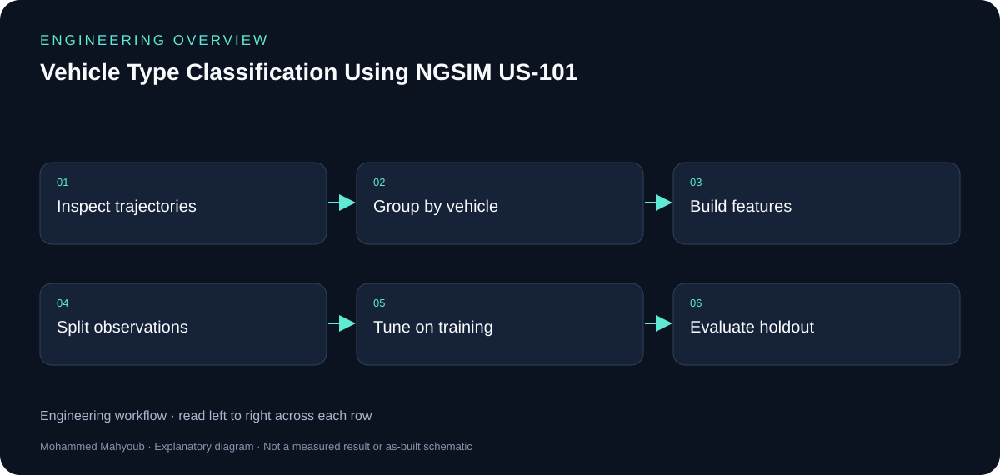
Evidence and validation
Review the documented implementation against these validation topics; measured results are shown only where provided by the source.
- Vehicle identities separated across splits
- Feature definitions and missing-value handling
- Training-only model selection
- Classwise confusion matrix and ablation results
Source gallery
Figures from the existing project repository, public notebook outputs, or corresponding LinkedIn project media. Original screenshots and existing explanatory figures retain their source context.

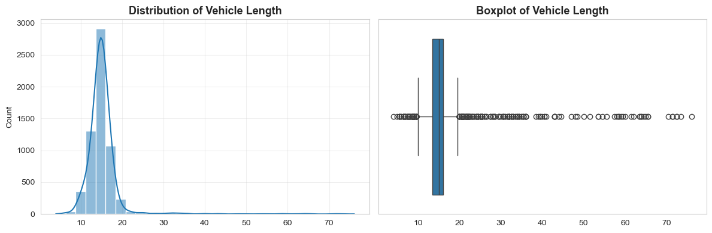

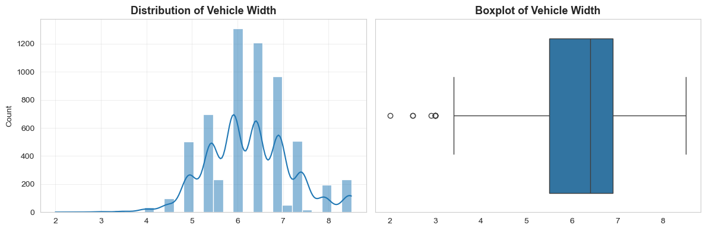

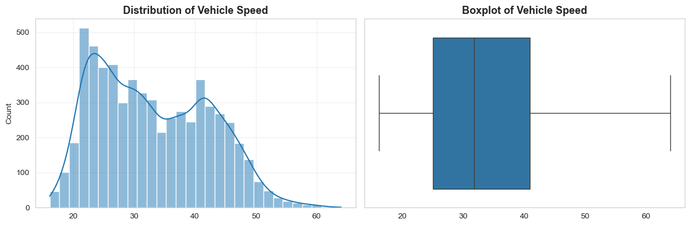

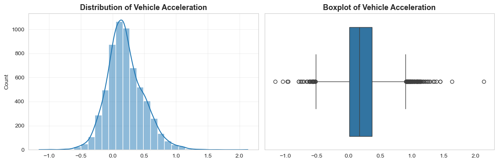

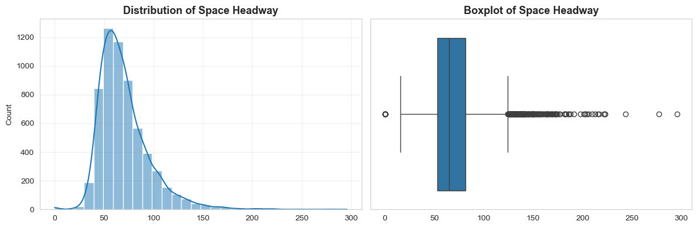

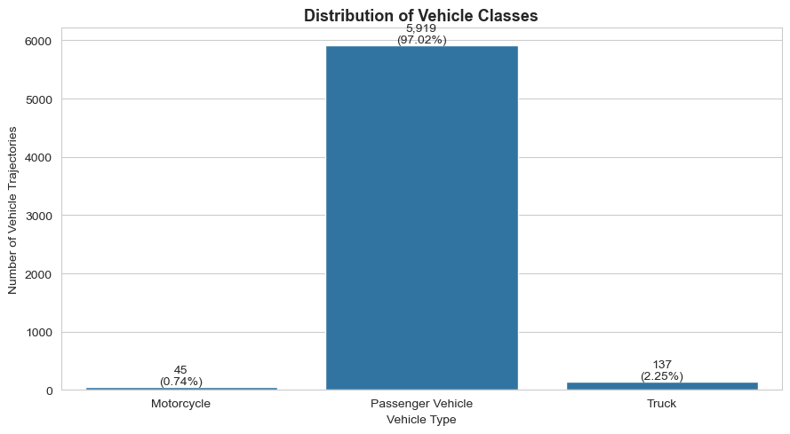

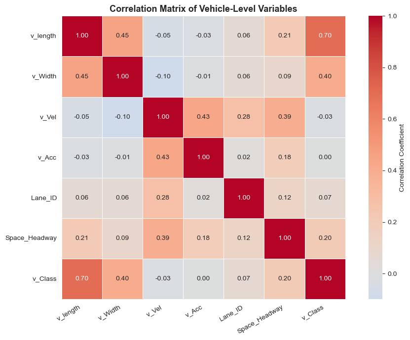

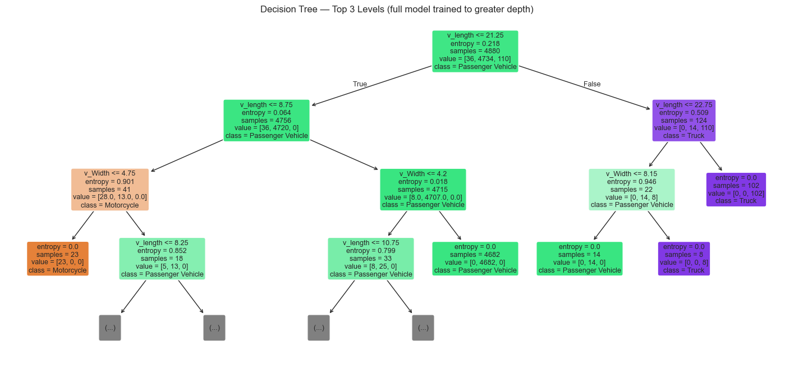

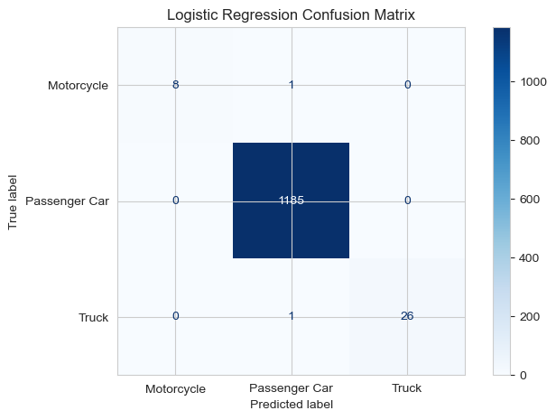

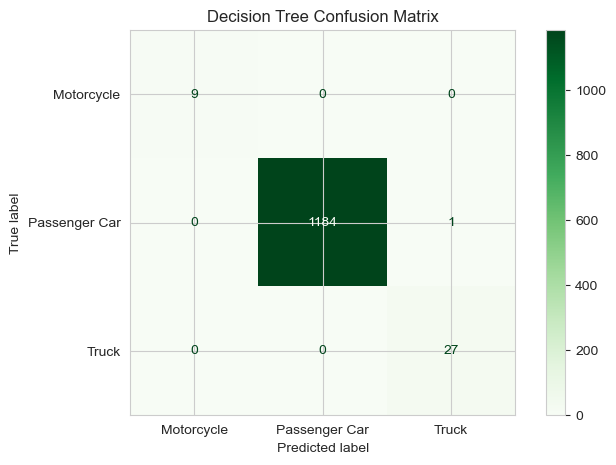

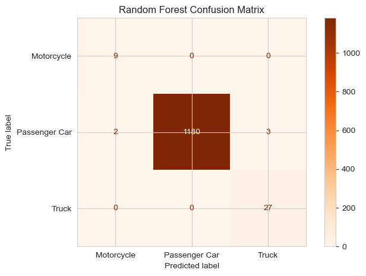

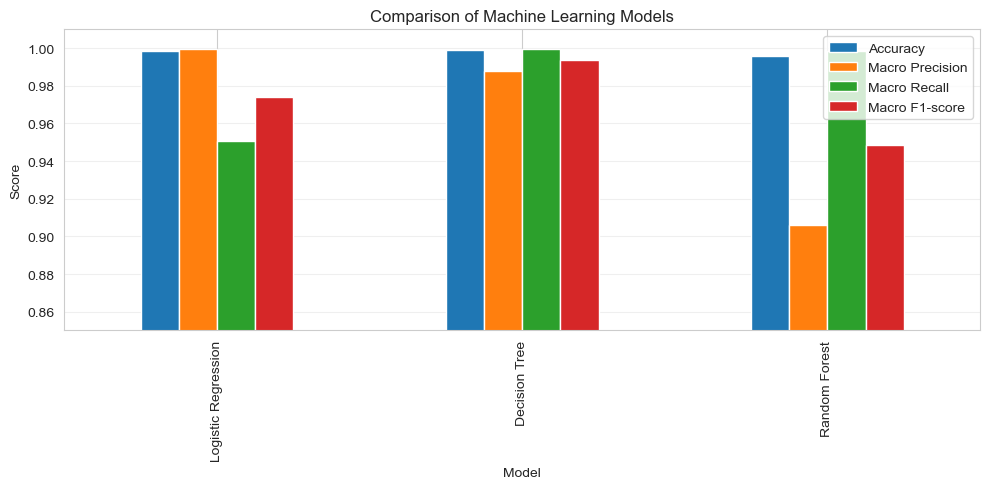

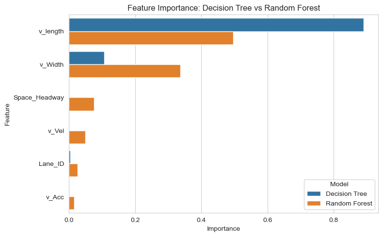

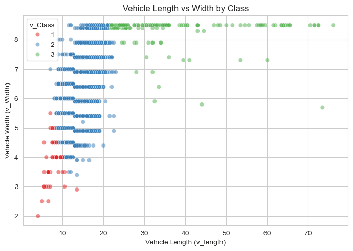